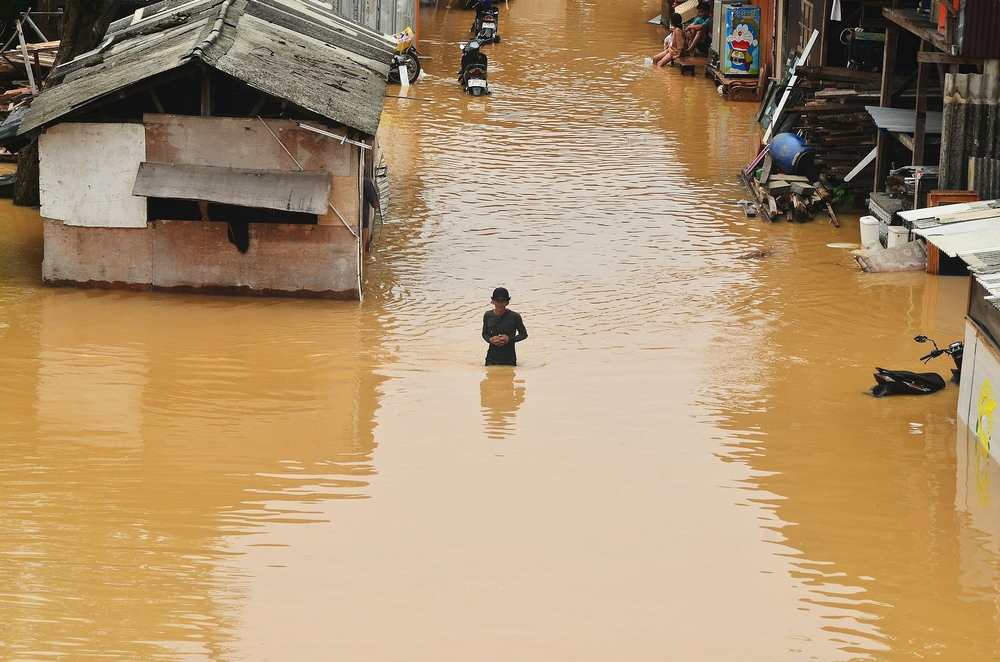
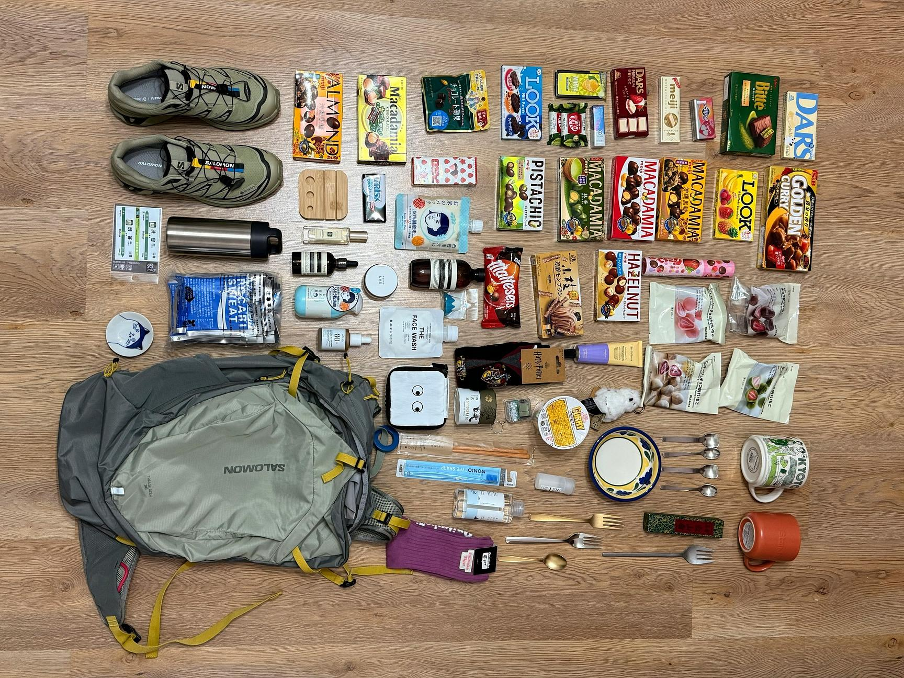

원문 출처: https://codefor.kr/posts/xltoDJ1
안녕하세요? 사람이 중심인 재난안전정보를 함께 만들어가는 안심이 팀입니다.
지난 6월, 재난안전 관련 전문가들을 모시고 생생한 현장의 경험을 듣는 밋앤핵을 진행한 이후, 이번엔 현재 재난 안전 정보 및 서비스에 대한 문제 인식 및 개선 방향에 대해 12명의 시민의 의견을 들어봤습니다. 먼저 재난 상황 경험과 정보 접근 경로를 공유하고 정보의 우선순위나 이해 가능성에 대해 논의했습니다. 그리고 재난 관련 앱이나 서비스 활용해본 적이 있는지에 대해서 물어봤습니다. 마지막으로 이상적인 재난 안전 서비스를 상상해보았습니다.
이번 인터뷰 프로젝트는 숲과 나눔 재단의 풀씨 사업 12기로 선정되어 지원을 받았습니다.
▶ 안심이에 대해 더 알고 싶으신가요? 코드포코리아 디스코드 #안심이 채널로 오세요!
#한국거주외국인
이번 인터뷰 대상자들 중 5명은 한국어가 모국어가 아니였습니다.
한 응답자는 내용을 파악하기 위해 구글 번역기를 사용해야 하며, 특히 문자가 복사되지 않는 경우 화면을 캡쳐하여 이미지 번역을 거치는 번거로운 과정을 필수적으로 거친다고 밝혔습니다. 다른 응답자는 영어로 오지 않는 문자는 무시하는 사람들이 있다고 말했습니다.
또 휴대폰으로 오는 알림과 문자는 문제가 무엇인지 알려주지만, '무엇을 해야 하는지'에 대한 구체적인 행동 지침이 부족하다고 느꼈습니다. 다른 응답자는 과거 미사일 경보 메시지에서 "대피하라"는 내용만 확인했을 뿐, 어디로 가야 하는지, 무엇을 챙겨야 하는지에 대한 필수 정보가 전혀 없어 정보가 매우 불완전했다고 지적했습니다.
대부분의 응답자는 정부에서 제공하는 비상 대응 앱이 있다는 사실을 몰랐지만 두 명의 응답자는 자주 확인하는 다른 유용한 앱이 있다고 말했습니다. 바로 날씨 앱입니다.
하지만 몇몇 응답자들은 이전에 살았던 나라들에 비하면 한국에서의 경험해본 재난은 덜 심각하다고 느꼈습니다. 인도네시아인 응답자는 한국에서의 장마는 홍수 (“flood”) 보다 폭우 (“heavy rain”)에 더 가깝다고 말했고 한국에 10년 거주한 캄보디아인 응답자는 “캄보디아에서는 거의 매년 홍수가 나기 때문에 우리에게는 매우 흔한 일”이라고 하였습니다.

Photo by Iqro Rinaldi on Unsplash한 응답자는 과거 강원도 산불 당시 현장 근처에서 화재의 심각성을 직접 목격한 후, 자신의 커뮤니티와 함께 피해 복구를 위한 기금 마련에 동참했던 경험을 공유하였습니다.
이처럼 한국거주 외국인 응답자들은 커뮤니티 네트워크를 중요하게 여기고 의존하는 경향을 보였습니다. 페이스북 그룹같은 SNS 기반 그룹에서 정보를 얻고 한 응답자는 한국인 친구가 대피해야 할 수있는 상황이 다가오면 연락을 한다고 덧붙였습니다. 다른 응답자는 각 커뮤니티 리더 연락망의 필요성을 강조했습니다. 또 자발적인 인터넷 검색을 통해 영자신문에서 제공하는 뉴스를 통해 신뢰할 수 있는 정보를 얻는다고 하였습니다.
#발달장애청년
발달장애청년허브 사회적협동조합 사부작 활동지원사와 활동가를 포함한 네분과도 인터뷰를 진행 했습니다.
한 응답자는 발달장애인 중에는 휴대폰을 소지하지 않거나, 핸드폰을 안 가지고 다니는 경우도 있으니 물리적으로 가까이에 있는 사람의 도움이 필수적임을 강조했습니다. 그리고 불필요하거나 과도한 재난 문자가 쏟아지면서 쓸모없는 문자가 너무 많이 와서 알림을 아예 꺼버린 응답자도 있었습니다.
다른 응답자는 재난 상황에서 발달장애인에게 가장 위험한 것은 “혼자 있는 것”이라고 하였습니다. 현재의 활동지원 서비스는 시간에 제한이 있어, "가족이 없다면 월에 570시간 정도는 혼자 있을 수밖에 없는 것"이 근본적인 문제라고 지적했습니다. 예비 인력의 필요성을 제시하며, 빠르게 출동할 수 있는 인력이 마련되어야 한다고 주장했습니다. 발달장애인의 경우 재난을 쉽게 인지하지 못할 수도 있기 때문에 대피가 필요한 재난시에 자동적으로 구조대 또는 지정된 지인들에게 (활동보조사 등) 위치 정보가 전달 될 수 있으면 좋겠다는 얘기도 나왔습니다.
재난 시 패닉에 빠진 사람들을 위해 "조용하게 혼자 있을 수 있는 공간"이 대피소에 마련될 필요가 있다고 밝혔습니다. 또한, "시각적 자극을 차단할 수 있을만한 다양한 도구들"이나 "자폐스펙트럼 장애인들에게는 압박 주는 조끼와 같은 도구들"이 제공될 수 있다면 좋을 것이라고 덧붙였습니다.
재난 대비 도구에 대해 "전문 도구 등은 개인이 챙기고 가지고 있기 자체가 어려운 경우가 많다"며, "차라리 재난대피 시설에 공용으로 마련해둘 수 있는 게 더 현실적이지 않을까"라는 의견을 제시했습니다.

#영유아 동반자
각각 20개월, 28개월 영유아를 동반하고 있는 부모 두 분과 인터뷰했습니다.
영유아 동반자들은 아이의 연령과 건강 상태에 따라 재난 대비 물품이 크게 달랐습니다. 한 응답자는 아이에게 석션기(suction machine)와 같은 생명 유지 장치와 특별한 경관 유동식이 필수적이어서 대피 시 최우선으로 챙겨야 한다고 밝혔습니다. 또, 대피 후 빠른 시간 이내에 병원에 갈 수 있어야 한다고 이야기했습니다. 대피소 주변 의료 인프라가 중요하다는 점을 배울 수 있었습니다.
28개월 아이의 부모는 장기 보관이 가능한 멸균 우유 , 담요 , 그리고 아이를 안정시킬 애착 이불 및 작은 자동차 장난감 등이 필요하다고 말했습니다. 반면 유모차는 부피가 너무 크기 때문에 챙기기 어렵다며, 대피 상황에서 부모 중 한 명이 아이를 계속 안고 이동해야 하는 어려움이 있을 것이라고 덧붙였습니다.
영유아가 더 어릴 경우(이유식 또는 분유 시기)에는 레토르트 죽, 분유, 젖병, 소독을 위해 물 끓이는 도구, 가제 손수건 등이 필수적입니다. 대피소 환경과 관련해서는, 아이의 용변을 처리하고 씻길 수 있는 턱이 낮은 세면대나 유아용 변기 지원이 필요하다고 제안했습니다. 또한 재난 상황의 낯선 환경은 아이에게 큰 불안을 유발하므로, 주 양육자 중 한 명은 반드시 아이 곁에 머물러야 한다고 강조했습니다. 재난 상황의 양육자에게는 특별 휴가 등 제도적 지원이 필요하다는 사실을 알 수 있었습니다.
by squirl, Yuna, Klou